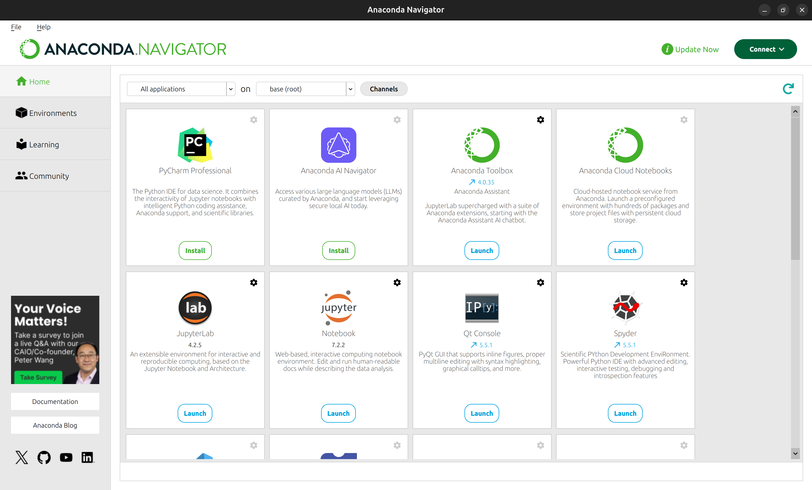
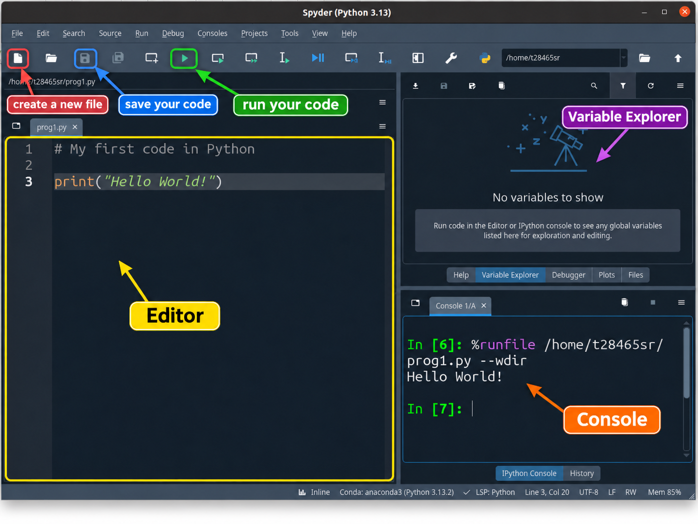
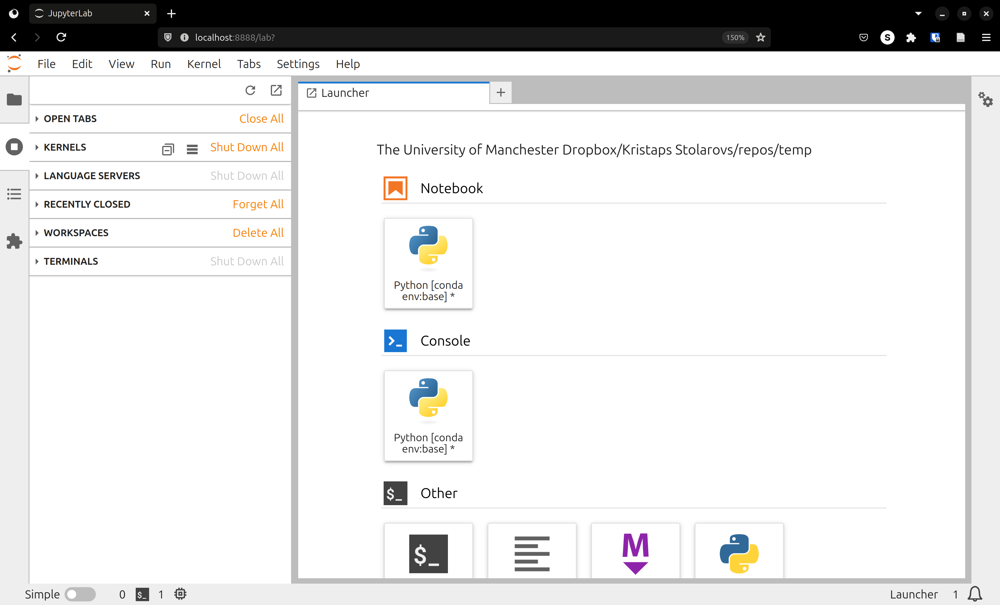
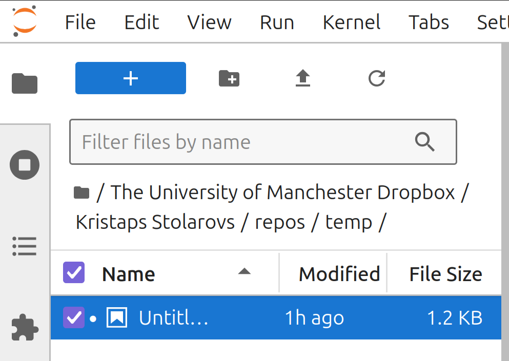
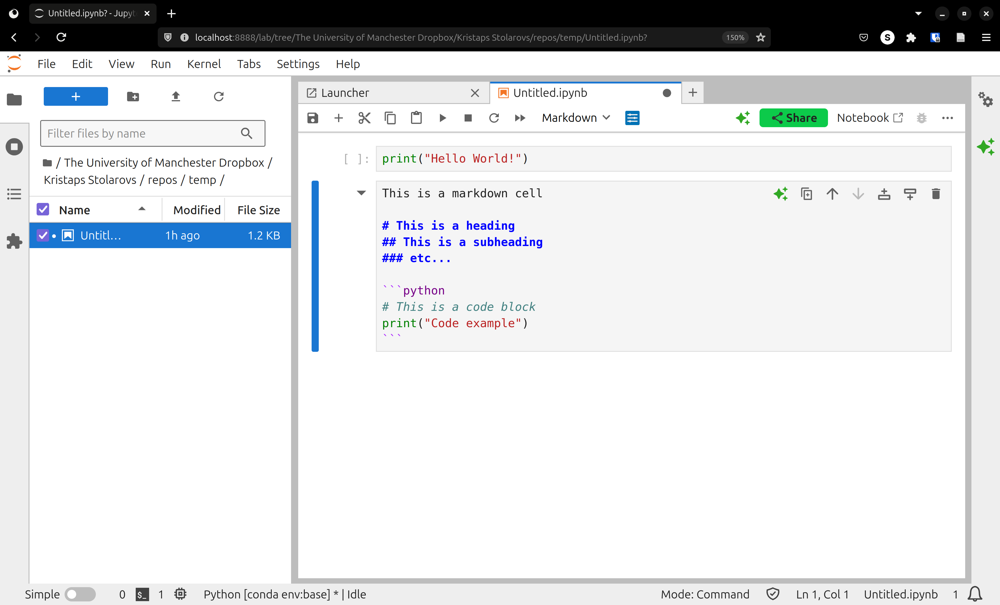
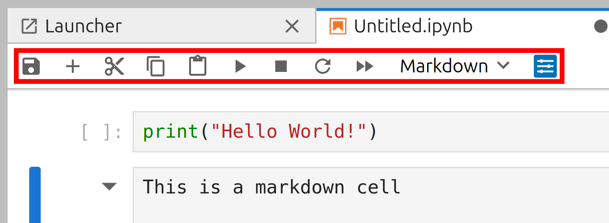
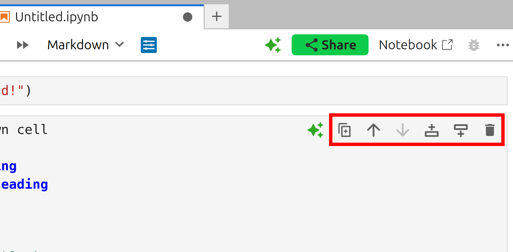
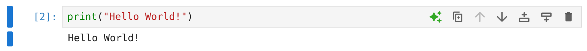
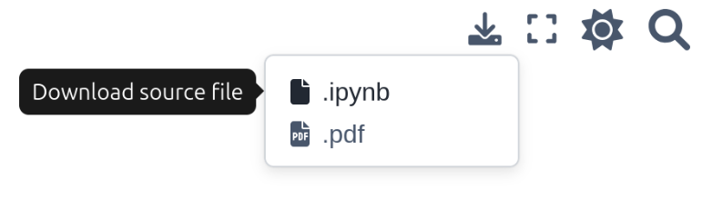

1. Preliminaries#
Kristaps Stolarovs, Michael Hrycek-Robinson and Saleh Rezaeiravesh
kristaps.stolarovs@manchester.ac.uk, saleh.rezaeiravesh@manchester.ac.uk
Department of Mechanical and Aerospace Engineering, The University of Manchester, Manchester, UK
1.1. Intended Learning Outcomes#
After reading this page, you should be able to:
Run or install Python on your machine
Get familiar with Spyder and Jupyter notebook
Run your first Python script
1.2. Why Python?#
Python is a powerful programming language that excels at handling mathematical and scientific computations. It emphasises readability and ease-of-use, and is generally much simpler to work with than lower-level languages such as C++ or Rust. What mainly interests us however, is the incredible amount of libraries which make it particularly suitable for numerical methods, data science, simulations, statistics and engineering.
Python is the language of choice for scientific computing. It is begginer friendly, has powerful mathematical libraries such as NumPy, SciPy and Matplotlib. These libraries provide us with a collection of precompiled codes that can be used later on in a program for some specific well-defined operations. Additionally, unlike MATLAB, Python is open source. Its use is completely free, and any part of its code can be viewed and modified.
1.3. Getting started#
To start working with Python, we need to set up our development environment.
To begin, we will need:
The Python interpreter itself.
A collection of libraries used for scientific computing which will be used in this unit.
Some form of editor. This can range from a simple text editor, all the way to a specialised IDE (integrated development environment).
1.3.1. The Python interpreter#
If you Google “download python”, you will most likely end up on the python.org website. Here, you can download the base interpreter. Unlike MATLAB however, Python isn’t a “turn-key” solution. You would be downloading just the Python interpreter, with no editor, and only the base libraries.
You can, however, install a Python distribution, which pre-packages a lot of useful libraries and tools. The most common example of this is Anaconda, which we recommend using for this course.
1.3.2. Libraries used#
In this course, we will stick to the base Python libraries, along with four very popular and mature libraries:
NumPy: This library adds support for large, multi-dimensional arrays and matrices, along with a large collection of high-level mathematical functions.SciPy: This library adds support for optimisation, linear algebra, integration, interpolation, special functions, FFT, signal and image processing, ODE solvers and other tasks common in science and engineering.Matplotlib: This library adds support for creating plots in Python.JupyterLab: This library implements Jupyter notebooks, an interactive environment for creating notebook documents combining both text and code. This book is written using Jupyter notebooks.
If you are using Anaconda, these libraries will be pre-installed in the base Anaconda environment.
1.3.3. Setting Up Your Environment#
To write Python scripts and run them in this unit, we recommend two environments:
Jupyter Notebook: As you are observing here, a Jupyter notebook allows us to:
Write and execute code in small, testable chunks
Include mathematical notation and explanations alongside our code
Create interactive visualizations of our numerical results
Spyder is an IDE among several options available. We recommend it because its suitability for scientific programming and facilitation of debugging codes.
Further down, you can see instructions for using these two environments.
1.4. Running Python on AppsAnywhere#
If you are using a computer in a university computer cluster, or already have AppsAnywhere on your personal laptop, you do not need to install Python and can skip the next section.
Launch Anaconda3 from AppsAnywhere. This will open a window displaying several applications. In this unit, we will use the following two options for writing and executing Python scripts:
SpyderJupyter Notebook
The following subsections provide a quick guide to using each of these tools.
1.5. Installing Python#
Skip this section, if you already have access to AppsAnywhere
First, you should pick the combination of distribution and editor you want to use. If you are a complete beginner, we recommend installing the Anaconda Distribution. Follow the install instructions for your specific system. If you are using a university cluster, these already have Python, Anaconda and the necessary scientific libraries installed. The Anaconda distribution includes Anaconda Navigator, a graphical interface that makes it easy to launch applications and manage packages. Here’s how to get started:
1.5.1. Installation Steps#
1.5.1.1. Download Anaconda:#
Go to the Anaconda download page
Choose the version for your operating system (Windows, macOS, or Linux)
Download the latest Python version
Note: Make sure you select the following to install: Jupyter Notebook, Numpy, SciPy, Spyder, and matplotlib.
1.5.1.2. Install Anaconda:#
Windows:
Double-click the downloaded .exe file
Select “Install for me only” (recommended for beginners)
Keep the default installation location
Check “Add Anaconda to my PATH environment variable”
macOS:
Double-click the downloaded .pkg file
Follow the installation prompts
Keep all default settings
Linux:
Open terminal in the download directory
Run:
bash Anaconda3-xxxx.xx-Linux-x86_64.shFollow the terminal prompts
1.5.1.3. Verify Your Installation:#
Open Anaconda Navigator:
Windows: Search for “Anaconda Navigator” in the Start menu
macOS: Open “Anaconda Navigator” from Applications or Launchpad
Linux: Type
anaconda-navigatorin the terminal
You should see a dashboard with various applications like JupyterLab, Spyder, etc., like so:

1.6. Introduction to Spyder IDE#
Spyder is a popular integrated development environment (IDE) for Python, particularly useful for scientific and engineering applications. You can launch it from the Anaconda application list or directly from a terminal on your computer.
The figure below shows a screenshot of the Spyder IDE, with some of its essential features highlighted.

In summary:
Create a new file: You can create a new Python script (
.pyfile) by clicking the New File button.Editor: This is where you write and edit your Python code.
Save your code: It is good practice to save your script regularly to avoid losing your work.
Run your code: You can execute your script by clicking the Run button (\(\triangleright\)) or pressing F5.
Console: You can provide inputs to your code and view printed outputs, including results and error messages, in the Console panel.
Variable Explorer: This panel displays the variables created by your code and their current values, allowing you to inspect them easily.
Plots: If your code generates figures, you can view them in the Plots panel, which can be accessed using the Plots tab next to the Variable Explorer tab.
1.7. Introduction to JupyterLab#
1.7.1. Starting your first Notebook#
For this course, we’ll primarily use Jupyter Notebooks. To start:
Open Anaconda Navigator
Click “Launch” under JupyterLab Your default web browser will open with JupyterLab, presenting a similar window:

Here, you can immediately click “Python [conda env:base]”, which will open a new Jupyter notebook in your current directory. You can use the File Browser tab to navigate to a directory of your choice, like so:

In your new notebook, you can use the toolbar to save your notebook, create, cut, copy, paste, run “cells”, which are self-contained code or markdown (text) blocks that you can run individually.



Any variables, functions, classes, etc. you declare in these cells can be used by any other cell. At any time, you can also restart the “Kernel”, which is the Python interpreter running behind the scenes. This clears all variables and functions from memory, giving you a fresh start.
1.7.2. Working with Cells#
There are two main types of cells in Jupyter notebooks:
Code Cells: Where you write and execute Python code.
Markdown Cells: Where you write text, mathematical equations, and documentation.
1.7.3. Cell Execution Order#
Understanding cell execution order is crucial:
Cells can be manually executed in any order
The number in brackets [1] to the left of a cell shows its execution order.
Variables and functions defined in one cell are available to all cells below.
If you manually run a cell (say cell [2]), and then run a different cell above it (cell [1]), the variables and functions defined in the lower cell [2] will be available to cell [1]. Keep this in mind to avoid confusion in the future.
Re-running a cell that defines a variable will update that variable’s value.
1.7.4. Adding Mathematical Equations#
For numerical methods, we often need to write mathematical equations. Jupyter supports LaTeX syntax:
Use
$...$for inline equationsExample: \(a^2 + b^2 = c^2\)
Use
$$...$$for displayed equationsExample: $\( a^2 + b^2 = c^2 \)$
2. Your first Python program#
You can run the following Python line in either Jupyter notebook or Spyder.
If using the former, after creating your first notebook, create a new code cell using the “+” symbol found in the toolbar.
Add this code to the cell:
print("Hello World!")
Hello World!
Run this cell using the “⏵” run cell button. Just below the cell, you should now see the text “Hello World!”, same as in the image below:

Congratulations, you have written a Python program!
You can repeat running the same script in Spyder.
3. Reading this Jupyter book#
This Jupyter book contains materials for the computer labs which complement the lectures slides.
For each lab, please read the materials before trying the exercises.
Only after trying the exercises, you are recommended to respond to the quizzes.
As this book is written using Jupyter Notebooks, you can download any chapter locally. You can use this to complete the exercises or try out some of the examples yourself. The download button in the top-right of the page gives the option to download either the Jupyter Notebook itself (.ipynb), or a PDF version of the chapter (.pdf).
